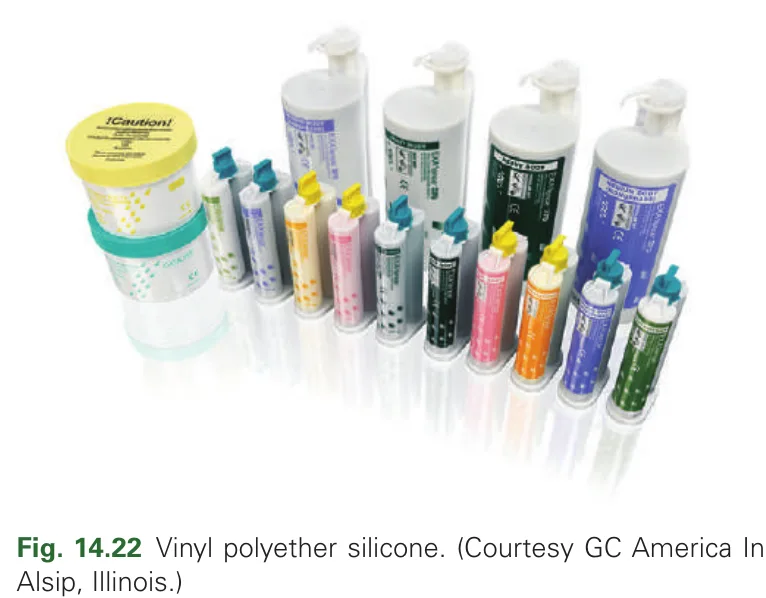

نسخه استخراجشده؛ ترجمه یا تأیید علمی انجام نشده است. وضعیت: captured
عیب اصلی سیلیکون، با یک قیاس گویا: «عیب اصلی سیلیکون، خواص ترشوندگی ضعیف آن است، که از بسیار آبگریز بودنش ناشی میشود — به همین دلیل در اسپریهای تجاری که سیستمهای الکتریکی خودرو را از رطوبت محافظت میکنند به کار میرود.»
و نتیجهی بالینیاش: «دندانهای تراشیدهشده و سولکوسهای لثهای باید کاملاً خشک شوند تا قالب عاری از نقص باشد.» و «ریختن بدون حبس حباب هوا نیز از سایر مواد دشوارتر است، و ممکن است سورفکتانت لازم شود».
و تکنیک پاتی-واش با اسپیسر: «یک تکنیک از مادهی پاتی با فیلر سنگین برای اختصاصی کردن یک تری پیشساخته در دهان استفاده میکند، عموماً با یک اسپیسر پلیاتیلن. اسپیسر جا برای یک واش نازک از مادهی سبک فراهم میکند که قالب را میسازد.»
و دو خطای مهلک این تکنیک: «این تکنیک هنگام نشاندن به دقت زیادی نیاز دارد تا از تنش در پاتی ستشده جلوگیری شود. اگر تنش رخ دهد، قالب هنگام خارج کردن از دهان بازگشت میکند، که به دایهای بیش از حد کوچک میانجامد.» و دوم: «دقت لازم است تا از آلوده شدن سطح پاتی با بزاق جلوگیری شود، که مانع چسبیدن درست قالب واش میگردد.»
و پلیاتر — با تاریخ و سازوکار متمایز: «در آلمان در میانهی دههی ۱۹۶۰ توسعه یافت و سازوکار پلیمریزاسیونی برخلاف سایر الاستومرها دارد. هیچ فرآوردهی جانبی فراری تشکیل نمیشود، و بنابراین پایداری ابعادی حاصل عالی است.»
و دو عدد متضاد در همین ماده: «انقباض پلیمریزاسیون آن در مقایسه با بیشتر سیستمهای پلیمری کیورشونده در دمای اتاق بهطور غیرمعمولی پایین است. با این حال، انبساط حرارتی آن بیشتر از پلیسولفاید است.»
و مزیت عملی پایداری بالا: «با پایداری ابعادی بالای پلیاتر، کستهای دقیق را میتوان تولید کرد حتی وقتی ماده بیش از یک روز پس از قالبگیری ریخته شود.» و مزیت دوم: «زمان ست شدن کوتاه در دهان (حدود ۵ دقیقه، که کمتر از نصف زمان لازم برای پلیسولفاید است).»
و چهار عیب پلیاتر: «صلبیت مادهی ستشده هنگام جدا کردن کست استون از قالب مشکل میسازد — «دندانهای نازک و منفرد بهویژه مستعد شکستناند مگر با احتیاط زیاد»؛ «پلیاتر تنها اگر خشک نگهداری شود پایدار است چون رطوبت جذب میکند و تغییر ابعادی معناداری مییابد»؛ «زمان کار نسبتاً کوتاه ممکن است تعداد دندانهای تراشیدهشدهای را که میتوان در یک قالب بهطور قابل اتکا ثبت کرد محدود کند»؛ و موارد جدا از حساسیت آلرژیک.
و شکل بروز آلرژی و اقدام لازم: «بهصورت شروع ناگهانی سوزش، خارش و ناراحتی عمومی دهانی بروز میکند. بنابراین پروندهی بیمار آلرژیک باید هشداری علیه استفادهی آینده از پلیاتر داشته باشد و الاستومر دیگری انتخاب شود.»

سیلیکون افزایشی در مقایسه: «در بسیاری جهات شبیه سیلیکون تراکمی است، جز آنکه پایداری ابعادی بسیار بیشتری دارد — معادل پلیمر پلیاتر — و زمان کارش بیشتر از دما اثر میگیرد.» و صلبیتش: «مادهی ستشده کمتر صلب از پلیاتر ولی سفتتر از پلیسولفاید است.»
و شناختهشدهترین مشکل این ماده: «ست شدن میتواند توسط دستکشهای لاتکس منتخب یا توسط مواد رزینی موقت مهار شود.»
و عامل شیمیاییاش: «دیتیوکارباماتها، که در ساخت دستکش بهعنوان عوامل ولکانیزه یا شتابدهنده به کار میروند، بهعنوان عوامل مسبب شناخته شدهاند.» و یک تشدیدکننده: «مواجههی دستکش با الکل نشان داده شده که مهار ست شدن را برای ترکیبهای منتخب ماده و دستکش تشدید میکند.»
و دو مسیر آلودگی — یکی مستقیم و یکی غیرمستقیم: «مشکل بیشتر وقتی آشکار است که از پاتی مخلوطشده با دست استفاده شود، ولی مشکلات میتوانند رخ دهند اگر بافتها بلافاصله پیش از جایگذاری قالب با دست دستکشدار لمس شوند.» و مسیر دوم: «نشان داده شده که سولفید و سولفید-کلراید میتوانند از دستکش لاتکس به نخ جابهجاکننده منتقل شوند، که انتقال این عوامل مهارکنندهی شناختهشده به بافتهای سولکولار را ممکن میکند.»
و راهحل: «هنگام استفاده از سیلیکونهای افزایشی، باید دستکشهایی که در ست شدن تداخل نمیکنند به کار روند.»
و مسئلهی گاز و «اسکاونجر»: «توصیههای سازنده باید هنگام ریختن کست رعایت شوند، و ریختن باید با برخی از محصولات قدیمیتر به تأخیر بیفتد؛ وگرنه تخلخل عمومی سطح کست بهواسطهی گاز حاصل از مادهی قالبگیری ایجاد میشود. محصولات جدیدتر حاوی اسکاونجراند — موادی شیمیایی که از خروج گاز در فصل مشترک پلیمر و کست جلوگیری میکنند. سیلیکون افزایشی حاوی اسکاونجر را میتوان بلافاصله ریخت.»
و دو مادهی نوتر: وینیل پلیاتر سیلیکون گزارش شده که «سهولت خارج کردن سیلیکون افزایشی را با آبدوستی (خواص ترشوندگی) پلیاتر ترکیب میکند»، و آن را «مادهٔ امیدبخشی برای موقعیتهای دشوار که کنترل رطوبت سخت است، مانند شیارهای لثهای باریک و عمیق» میسازد.
یک مطالعهی آزمایشگاهی نتیجه گرفت پایداری ابعادی و بازتولید جزئیات سطحی آن «با پلیاتر و پلیوینیل سیلوکسان قابل مقایسه است» — هرچند «مطالعات بالینی برای بررسی دقت این مادهی جدید لازماند».
و الاستومرهای قابل اسکن: «بهعنوان جایگزینی برای قالبگیری متعارف و ریختن استون، قالبهای الاستومری قابل اسکن میتوانند بدون ریختن کست استون اسکن شوند. خواص فیزیکیشان با الاستومرهای متعارف متفاوت است، بهویژه روشنایی سطحیشان، که دیجیتالیسازی را بهبود میبخشد.»